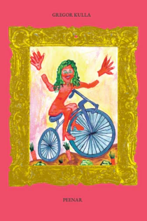

book
Peenar Värske Raamat (artist Kris Lemsalu, illustrator Mette-Mari Kaljas, editor Tõnis Vilu) 2024
A prose-poetry book in Estonian (soon in English). there was a girl in nursery who bullied everyone but especially me and my best friend she grabbed my hair which was already long back then and smashed my head against the edge of the glass aquarium she had the most toys which she rubbed inside her knickers before nap time and then offered to everyone while i braided the hair of the girl sleeping beneath me so i could play with her barbies my mum’s a hairdresser the girl hit my best friend with a metal rake built a hut out of big lego bricks for herself and when i tried to sneak past so she wouldn’t see me she started screaming and lied to that stupid teacher – who pulled my hair – that i had destroyed her hut and then i got punished it happened so often that she lied about me and never did the teacher believe me never because i could never stop laughing when provoked and then i was at fault; i was disturbing others i remember once in music class we listened to opera and i almost pissed myself – the first time i heard opera and it was hilarious ist es immer noch not to mention meal times when a boy called andris always made me laugh so i didn’t eat i just sat at the table laughing and watching andris because of that i was sat at the so-called special needs table with another boy whose mum always packed food for him he got to drink juice boxes and eat crisps i’m so afraid of lying a lie is powerful that girl’s twin sister died in primary school we were on the top floor of the boarding school building one boy in our class shat in the sink before that he peed past the urinal everyone understood it was deliberate he was caught he had just gone to the loo during class and someone before and after him had gone and said returning to class that he had shat or pissed – i can’t remember he went completely berserk – threw stuff off the table at the form teacher (the same one who liked queen) flipped the table kicked the chair and ran out crying a few years later he got tick-borne encephalitis but fully recovered and i thought people die from that [...]  More info
fiction
My Poor Love and the Garden Bed Estonian Literature (translated by Kristjan Haljak, Slade Carter and Gregor Kulla) 2025
i’m built different stinky there’s loser in me too smile a frozen winner’s smile no one wants to pick off a tree a rotten smile full of wasps everything’s buzzing it’s so hot i order a mezcal with ginger beer and lay my puzzy behind a low table time undulates below Read more
essays
Comedown NSFW Gallery 2025
Essay for artist Madlen Hirtentreu's solo exhibition in NSFW Gallery. I’m so glad you’re here! I’ll be your guide on this journey through this unusual place of forgotten exuberance. Welcome to Comedown! As you can see, the party has just ended, and all around lie the things left behind — items forgotten, perhaps, or abandoned… who can say? Either way, we’re lucky because it is not often that we get to experience what success is made of. Take a look around. If you’ve got a keen eye, you might spot a clue about the unique party that took place here. Look at those happy figures on that fresco, clinking their champagne glasses, “This is our last time to be sexy and free!” Can you feel the excitement? I indeed can, winky face. And of course, how else would the rich, famous, and fabulous celebrate if not with excellent taste and a few… how may I say… erotic dancers? Am I right, ladies? [...] Read more
To live online Trickster Magazine 2025
It’s almost impossible for me to live offline, so I’ll allow myself to discuss a little bit of internet gossip and its offline reality. Maybe I’ll go through some recommendations as well. Like, I spend a large portion of the day in front of different-sized screens: YouTube essays, movies, texting on Signal, Messenger, Instagram, sending emails, doomscrolling, sharing my accomplishments on Facebook, researching my diagnoses on Reddit, reading news from, well, everywhere, ordering all kinds of shit, googling… you get it. A week ago, I scrolled past a Reel, which I sadly can’t find any more, where an alt-girl said, “You’re gay, that’s cool, I’m straight,” and went on to ask why everyone online is obsessed with their sexual orientation. She isn’t because she’s cool and straight, I guess. Or is she? #homophilia2025 Since my algorithm is AS queer and woke as it could possibly be, meaning in MY Reels, it’s usually straight white girls who express concerns about wokeism, not white gym bros. So for the sake of clarity, henceforth I’ll call this “why is everyone obsessed with their sexual orientation?” Reel just a sexual orientation Reel. For a year or two, I’ve encountered that some young people think that year 2020 wants its #homophobia back. In woke countries, at least. Most of my straight friends haven’t noticed homophobia happening to non-straight people, and their experience is that it’s over and belongs to the 2020 trend album. It all crystallised when my psychologist, who’s a total ally btw, was shocked after I told her what happened to me in Kopli, and asked, “Is homophobia still a thing?” fr, even in Tallinn? girl… [...] More info
Maria Metsalu CURA Magazine 2025
You’re at a performance and are ushered into a room with a round table in the middle. It looks as if it’ll be dinnertime soon. There are five chairs. Someone stumbles past you and sits down. Will you sit down at the table? Your answer is ‘no’. The table fills up with people and you have to sit on the floor, against the wall. A three-course dinner is served for five people, including pickled eggs, Baltic herring, fermented asparagus and a cocktail with a name so complicated you can’t remember it. You watch as the diners feast and try to make small talk with each other. Someone offers you a cold hot dog. You hear another person at the table ask for a second drink, and the waiter returns with a receipt and a payment terminal. “That’ll be around hundred euros per Nase.” Someone sneaks away from the table and one of the diners starts arguing that they hadn’t counted on having to pay for the meal. You look at them and think. Your answer is ‘yes’. You sit down at the table with four strangers. Everyone else sits around you on the floor. You’re served a three-course dinner that includes pickled eggs, Baltic herring, fermented asparagus and a cocktail so complicated its name escapes you. The food is delicious and you try to make small talk as you ask for another drink. The waiter returns with a receipt and a payment terminal. “That’ll be around hundred euros per Nase.” A person to your right whispers that they have to visit the toilet. They don’t return. The waiter looks at you and asks how you would prefer to pay. You glance at the people sitting on the floor behind you, who have suddenly stopped talking and are staring at you. [...] More info
Ghost me then Trickster Magazine 2024Essay for artist Johanna Ulfsak's solo exhibition in Draakon Gallery. More info
Guiding Threads Draakon Gallery 2024Essay for artist Johanna Ulfsak's solo exhibition in Draakon Gallery. More info
interviews
Gender is a language, and it could be fun to play with if there wasn’t so much power and coercion attached to it. Interview with McKenzie Wark Värske Raamat 2024
Earlier this year I came across McKenzie Wark’s book Raving (2023) in Rile bookshop in Brussels and bought it on a whim. It soon became my favourite book of the year, and since then, I've tried to get a hold of her other books as well. In a slight moment of insanity, I sent her a dm on Instagram, asking whether she'd be willing to take a look at a research article I was writing on raving and music. At the same time, I also felt I would be missing an opportunity if I didn't also ask her for an interview. So, at the end of September, I talked to the Australian-born New York-based writer, professor of Culture and Media and director of the Gender Studies programme at the Eugene Lang College at The New School about music, religion, a little bit about Marxism, queer and trans literature, and how gender affects language and writing – all of which are my favourite topics. I certainly came away from this conversation with new perspectives, and I hope you will too. We started with raving. Read more
articles
Gregor Kulla: AI Leap into the unknown Estonian National Broadcasting 2023
The AI leap is somewhat flawed, as it throws fuel onto the unresolved problems of an education system already dragging its feet. The goal seems to be to boast, "we were first," without analyzing whether AI is needed in education at all, writes Gregor Kulla in a commentary originally published in Õpetajate Leht. Read more
Explore more articles in Estonian on cultural press websites: Müürileht Sirp Teater.Muusika.Kino Värske Rõhk Õpetajate Leht Eesti Päevaleht Eesti Ekspress